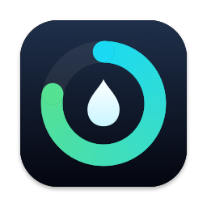

DropbiteSupport
Mit Dropbite trägst du ein, was du isst und trinkst, per Barcode, Suche, Foto oder Beschreibung. Die App schreibt Kalorien, Nährstoffe und Wasser in Apple Health. Fragen, Fehler oder Wünsche bitte an app@codezenith.com.
Ein Produkt wird nicht gefunden
Dropbite fragt zuerst Open Food Facts, eine freie Datenbank. Kennt sie das Produkt nicht, schätzt eine KI die Werte. Dafür wählst du unter Einstellungen einen Anbieter, etwa Claude, OpenAI, Gemini oder Mistral mit deinem eigenen API-Schlüssel, oder ein lokales Modell über Ollama oder LM Studio. Mit einem Open-Food-Facts-Konto kannst du das Produkt danach für alle in die Datenbank eintragen.
Die Werte fehlen in Apple Health
Unter Einstellungen → Health → Datenzugriff & Geräte → Dropbite muss das Schreiben erlaubt sein. Auf dem Mac gibt es kein Apple Health, dort Eingetragenes übernimmt dein iPhone, sobald du Dropbite dort öffnest.
Die Einträge erscheinen nicht auf dem anderen Gerät
Alle Geräte müssen mit derselben Apple-ID in iCloud angemeldet sein. Der Abgleich dauert manchmal ein paar Minuten.
Support
Dropbite lets you log what you eat and drink by barcode, search, photo or description. It writes calories, nutrients and water to Apple Health. Questions, bugs or ideas: please write to app@codezenith.com.
A product isn't found
Dropbite asks Open Food Facts first, a free database. If it doesn't know the product, an AI estimates the values. For that you pick a provider under Settings, such as Claude, OpenAI, Gemini or Mistral with your own API key, or a local model through Ollama or LM Studio. With an Open Food Facts account you can then add the product to the database for everyone.
Values are missing in Apple Health
Writing must be allowed under Settings → Health → Data Access & Devices → Dropbite. The Mac has no Apple Health; anything you log there is written by your iPhone the next time you open Dropbite on it.
Entries don't show up on another device
All devices need to be signed in to iCloud with the same Apple ID. Syncing sometimes takes a few minutes.